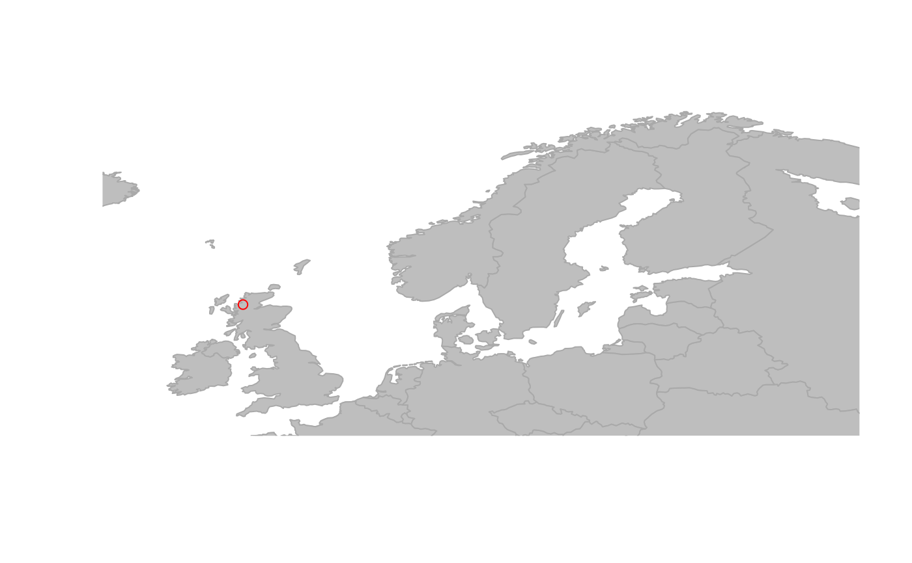
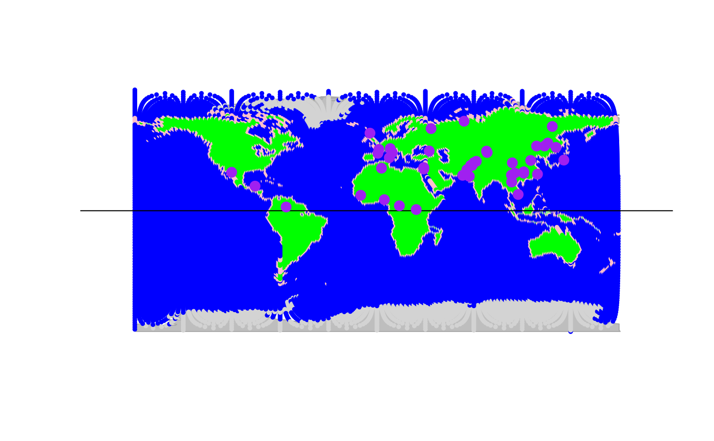

Formal class "gData"
gData-class.RdThe class gData is a formal (S4) class storing georeferenced data,
consisting in a set of locations (longitude and latitude) where one or
several variables have been measured. These data are designed to be matched
against a gGraph object, each location being assigned to the
closest node of the gGraph object.
Details
Note that for several operations on a gData object, the
gGraph object to which it is linked will have to be present in
the same environment.
Slots
coordsa matrix of spatial coordinates with two columns, being respectively longitude (from -180 to 180) and latitude. Positive numbers are intended as 'east' and 'north', respectively.
nodes.ida vector of character strings giving the name of the nodes (of the gGraph object) associated to the locations.
dataany kind of data associated to the locations in coords. For matrix-like objects, rows should correspond to locations.
gGraph.namea character string the name of the gGraph object against which the object is matched.
Note that none of these is mandatory:
new("gData")would work, and create an emptygGraphobject. Also note that a finer matching of locations against the nodes of agGraphobject can be achieved after creating the object, for instance using theclosestNodemethod.
Objects from the class gData
gData objects can be created
by calls to new("gData", ...), where '...' can be the following
arguments:
See also
Related class:
- gGraph
Author
Thibaut Jombart (t.jombart@imperial.ac.uk)
Examples
hgdp
#>
#> === gData object ===
#>
#> @coords: spatial coordinates of 52 nodes
#> lon lat
#> 1 -3 59
#> 2 39 44
#> 3 40 61
#> ...
#>
#> @nodes.id: nodes identifiers
#> 28179 11012 22532
#> "26898" "11652" "22532"
#> ...
#>
#> @data: 52 data
#> Population Region Label n Latitude Longitude Genetic.Div
#> 1 Orcadian EUROPE 1 15 59 -3 0.7258820
#> 2 Adygei EUROPE 2 17 44 39 0.7297802
#> 3 Russian EUROPE 3 25 61 40 0.7319749
#> ...
#>
#> Associated gGraph: worldgraph.40k
## plot data
plot(worldgraph.40k, pch = "")
points(hgdp)

## subset and plot data
onlyNorth <- hgdp[hgdp@data$Latitude > 0] # only northern populations
plot(worldgraph.40k, reset = TRUE)
abline(h = 0) # equator
points(onlyNorth, pch.node = 20, cex = 2, col.node = "purple")
